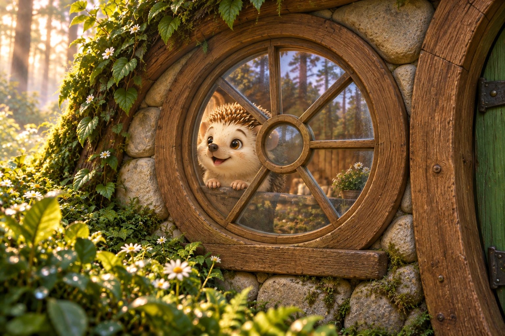

01
Earlier window close-up: eight-spoke frame
Proposed correctionThe retained earlier close-up inherited a six-spoke frame inconsistent with the kitchen.


The welcome and camera sequence stay the same. These focused corrections address physical details such as window glass, separate bodies, and believable contact between characters. Compare each current draft image with its proposed replacement.
6 / 6 corrections available. The preserved original chapter contains 15 story images plus its cover. Images are shown in full; select an image to inspect it at its original size.
The retained earlier close-up inherited a six-spoke frame inconsistent with the kitchen.

Undo strong reflection effect; match the established eight-spoke kitchen frame.


Correct frame connectivity and remove exaggerated new glass effects.


Replace incompatible reverse-view frame, with gentle glass only.


The prior repair showed incompatible shoulder/hip rotation and two apparently near-side arms.


Return to the earlier doorway image; no shortened Mama arm or additional baby repair.